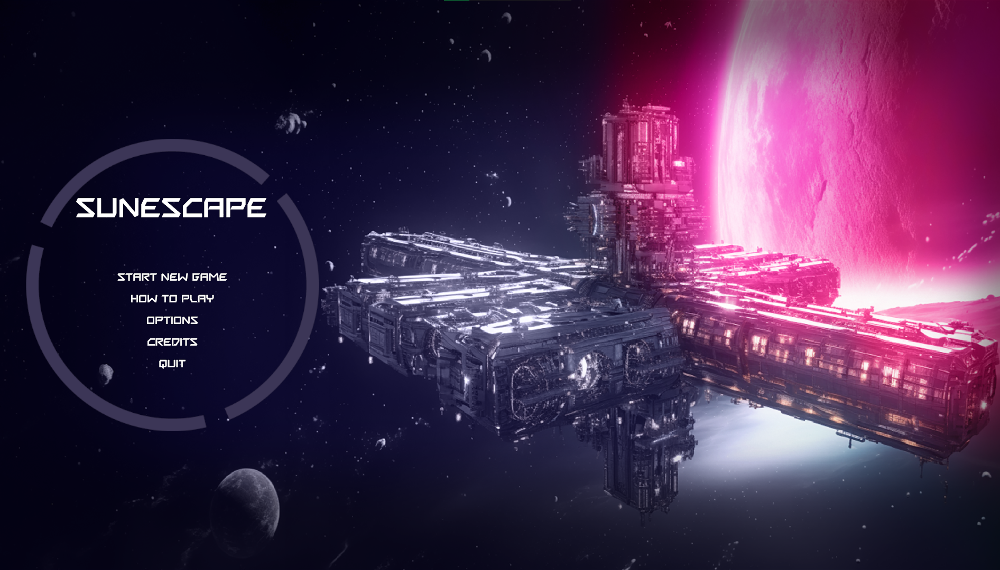

Project Info
- Role: Gameplay Programmer
- Team Size: 8
- Time frame: 4 months
- Engine: Unreal Engine 5, 3D, Multiplayer
- Tasks: Multiplayer matchmaking, deathmatch gamemode
Highlights
- Deathmatch gamemode took a lot of time as this was first multiplayer project I made with Unreal Engine. I'm really proud of how it turned out.
Matchmaking
- Steam integration: Game detects and connects to steam on startup
- Lobbies: Able to make private or public lobbies
- Lobby searching: Display all lobbies
Deathmatch gamemode
- Kill feed: Displays names of the killer and killed player
- Scoreboard: Displays steam icon, name, kills, deaths, KDA
- Match winner: Announces the winner of the match at the end of the round
Project Info
- Role: Gameplay Programmer
- Team Size: 6
- Time frame: 3 months
- Engine: Unity, 2D, Mobile
- Tasks: Input detection, player, level systems
Highlights
- First mobile project and we even got it published to Google Play! I'm proud of the input detection system I made because it turned out responsive.
Input detection
- Different inputs: Game detects swipes up, down and taps left and right on both sides of player

Level systems
- Rewards: Detects if different correct or incorrect inputs were made and gives rewards accordingly
- Repeating background: Seamlessly starts repeating background
- Replay: Able to replay same level, go to next one or revive with one life

Player
- Enemy detection: Detects enemies that come close
- Input detection: Moves to the direction of input
- Input feeding: Checks if the input made matches the one needed to kill the enemy
Kata Night - Google Play
Check out Kata Night on the Google Play Store:
Click here to view the game
Project Info
- Role: Gameplay Programmer
- Team Size: 9
- Time frame: 2 months
- Engine: Unity, 3D
- Tasks: Main menu, pause menu, enemy AI
- Special mention: Assembly Summer 2023 Development Competition 5th place
Highlights
- First project where I learned to use JSON.
Menus
- UI toolkit: Modular menus made with UI toolkit
- Settings: Volume, music, graphic settings
- Saving: Chosen settings get saved and loaded

Enemy AI
- Melee enemy: Enemy that comes close and tries to slash the player
- Crawler: Enemy that follows player and tries to plunge and topple the player
- Exploding enemy: Enemy that tries to come close to player and explode

Menu camera
- Camera: Level selection camera that can move left and right

Project Info
- Role: Gameplay Programmer
- Team Size: 5
- Time frame: 8 weeks
- Engine: Unity, 2D
- Tasks: Menus, enemy AI, inventory
Highlights
- First project where I learned about Enemy AI.
Menus
- Basic start and pause menus
- Settings: Volume, music
Enemy AI
- Pathfinding: A*
- Tries to come close to player and bite
- Spawning when certain puzzles are done
Inventory
- Three slot inventory
- Items can be used by pressing once or dropped by holding